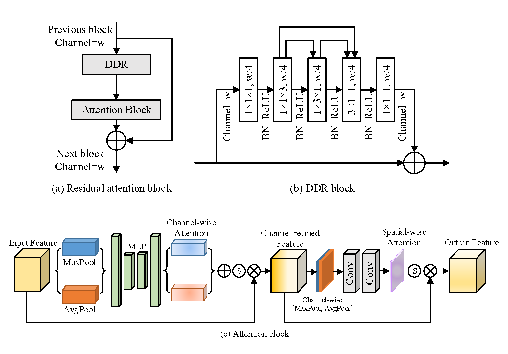
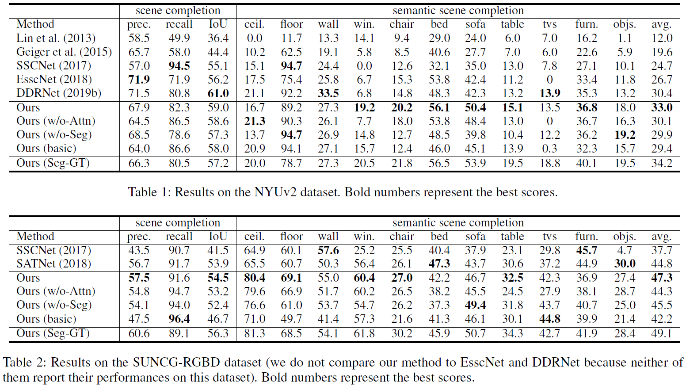

基于注意力的多模态融合网络在场景语义分割上的应用
李思奇
我们提出了一种基于注意力机制的三维卷积网络(AMFNet)用于语义场景补全(SSC)任务，即使用单视角RGB-D图像实现场景完成与语义分割。 已有的方法仅使用从RGB-D图像中提取的语义特征实现场景完成，而我们提出的AMFNet可以充分使用2D语义分割信息来同时提升场景完成与语义分割的效果。 AMFNet基于2D语义分割实现多模态融合，使用基于残差注意力模块的3D语义场景补全网络提升模型性能。我们在虚拟合成的SUNCG-RGBD数据集 和真实采集的NYUv2数据集上进行了验证。实验结果表明，与现有的最佳方法相比，AMFNet在两个数据集上分别实现了2.5%和2.6%的性能提升。

Figure 1. Architecture of AMFNet. Taking RGB-D images (separated to a RGB and a HHA image) as input, AMFNet predicts voxel occupancy and object labels of the scene simultaneously. It boosts the 3D completion and segmentation from an initial 3D semantic feature volume produced by computing the 2D-3D projection of the results of a 2D segmentation network.
方法
The proposed AMFNet, as illustrated in Figure 1, mainly contains three sequential modules: a 2D segmentation network, a 2D-3D projection layer, and a two-branch 3D volume network. This network takes single-view RGB-D images as input and outputs occupancy and semantic labels for all voxels in the scene. The whole network can be trained in an end-to-end manner. We next introduce each module in the sequence of the flow of data processing. The 2D segmentation network extracts 2D geometry features and performs 2D semantic segment-ation from the input RGB-D images. The 2D-3D projection layer projects every feature tensor and semantic label into the 3D volume at the location with the same depth value. The 3D volume network, which takes the output of the 2D-3D projection layer as input, contains two branches: one for 3D guidance information and the other for 3D semantic completion.

Figure 2. Illustration of the proposed residual attention block (RAB). RAB has a structure similar to the DDR block but with both channel-wise and spatial-wise attention injected.
The 3D-guidance branch is used to provide the guidance information for the branch of 3D semantic
completion, which is boosted from an initial 3D semantic volumetric scene where visible voxels have initial
semantic labels. The initial 3D semantic volume is encoded by a one-hot encoder to achieve an ROI region (3D
bounding box) for a specific category from the initial 3D semantic volume. The one-hot encoding introduces spatial
boundary constraints into the network for each category, which improves the prediction of 3D semantic volume.
The 3D-semantic completion branch, which takes the initial 3D feature volume as input, is mainly used to infer the voxel occupancy
of the 3D scene. The RAB block used in the 3D-completion branch is shown in Figure 2.
实验结果

Table 1 and Table 2 presents the comparison results of both the scene completion and the semantic scene completion on the NYUv2 dataset and SUNCG-RGBD dataset, respectivly. Compared with previous methods, our model achieves state-of-the-art performance on the task of semantic scene completion and scene completion.

Figure 4. Qualitative results on the NYUv2 dataset. From left to right: RGB image, ground truth of 2D segmentation result, ground truth of SSC task, results generated by SSCNet, SATNet, our approach, our approach with attention block removed, our approach with 3D-guidance branch removed, and our approach with the result of the 2D semantic segmentation module replaced by the ground truth.
The visualization of the qualitative results of the semantic scene completion task generated by the proposed method and two previous methods, SSCNet and SATNet, on a set of representative samples from the NYUv2 dataset is shown in Figure 4. It can be easily seen that our method has achieved better performance than SSCNet and SATNet.
Publications
Attention Based Multi-modal Fused Network for Semantic Scene Completion.
AAAI Conference on Artificial Intelligence (AAAI), 2020.